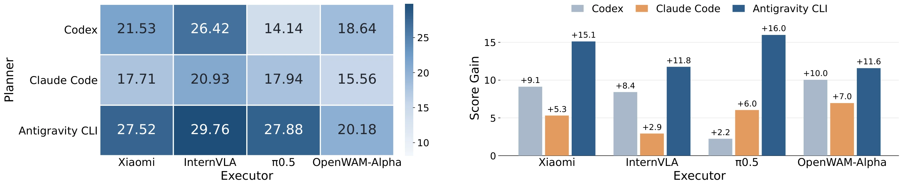
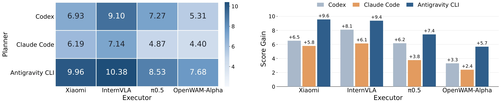
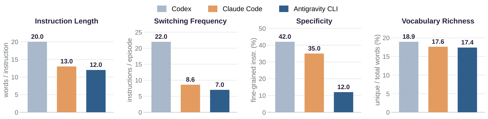
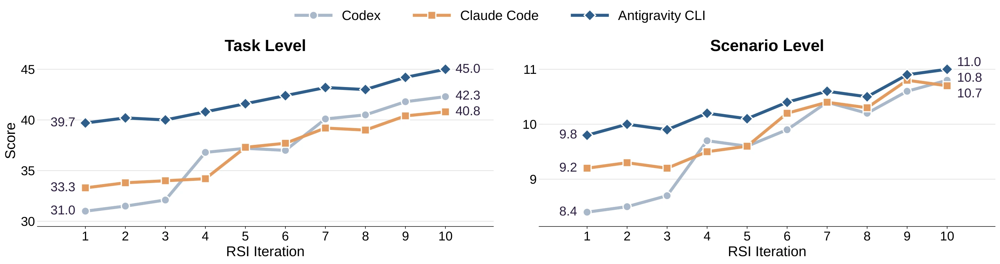

From robot manipulation to robot autonomy.
Recent advances in vision-language-action (VLA) and world-action models (WAMs) have significantly improved robotic manipulation, yet deploying robots in the open world demands a higher level of autonomy beyond executing predefined tasks. Robot agents offer a promising paradigm for this transition, integrating task discovery, contextual reasoning, physical execution, and adaptive recovery into a closed interaction loop. However, existing benchmarks largely evaluate isolated capabilities, failing to capture the complexity of open-world robot autonomy. We introduce RobotAgentBench (RAB), a comprehensive benchmark for evaluating robot agents in realistic, open-world household environments. Through an agent-assisted, human-in-the-loop real-to-sim pipeline, RAB constructs 50 diverse household layouts with interactive objects and physically grounded tasks, encompassing 90 atomic tasks, 18 short-horizon tasks, 8 long-horizon tasks, and 4 open-ended scenarios. RAB provides a multi-level evaluation of robot agent capabilities: (1) task-level assessments systematically examine five complementary dimensions—task discovery, context reasoning, manipulation, failure recovery, and robustness; (2) scenario-level evaluation assesses how agents integrate these capabilities to autonomously fulfill high-level user needs. Furthermore, RAB enables systematic comparisons of standalone VLA/WAM models and diverse robot agent architectures under a unified planning–execution–verification framework. Extensive experiments reveal substantial gaps between manipulation and autonomy, demonstrate the advantages of agentic architectures and recursive self-improvement, and highlight the remaining challenges toward open-world robot autonomy.

What does a robot agent need to act autonomously in the real world?
“Prepare the home for guests” sounds simple—but where should a robot begin? It must identify what needs to be cleaned, select appropriate food based on user preferences, coordinate multiple activities, and recover when manipulation attempts fail. Such challenges are intrinsic to everyday physical environments. RobotAgentBench evaluates these demands across five complementary dimensions: task discovery, context reasoning, manipulation, failure recovery, and robustness. Beyond assessing individual capabilities through dedicated tasks, we introduce four open-ended scenarios that require agents to integrate these capabilities and coordinate multiple tasks to autonomously fulfill high-level user needs.
Task-level evaluation
We design five complementary evaluation settings to examine how robots determine what to do, execute physical actions, and adapt to unexpected outcomes. Each setting comprises a suite of dedicated tasks.
Scenario-level evaluation
Unlike task-level evaluation, robots do not receive explicit task lists. Instead, they must autonomously explore the environment, identify relevant tasks, interpret user needs, and plan their execution.
Household tasks, in motion.
From preparing food to putting things away, explore everyday interactions across varied household settings.
An agent-assisted, human-in-the-loop real-to-sim pipeline.
To enable realistic and scalable evaluation, we develop an agent-assisted, human-in-the-loop real-to-sim pipeline that starts from a physical room in a real home, reconstructs it in simulation, expands the reconstructed scene into diverse interactive configurations, and collects demonstrations for training and evaluation.

How far are we from open-world autonomy?
We conduct systematic experiments at both the task and scenario levels to evaluate standalone VLA/WAM-based policies and complete robot agents. Building on the unified robot agent framework we developed, we compare different harness designs and examine their effects on task performance.
Interprets environmental context and user requirements, decomposes tasks, and adapts plans based on execution feedback.
Translates instructions into physical actions through learned policy models (e.g., VLA and WAM) or code-based control.
Monitors execution outcomes, identifies failures, and guides corrective actions.
VLA/WAM Policy + Code Verifier
A VLA/WAM policy generates actions, while a coding-agent verifier monitors execution, selects action prefixes, and applies local corrections before querying the policy again.
Code Planner + VLA/WAM Policy
A coding-agent planner decomposes tasks into subtask instructions for a VLA/WAM policy and revises them based on execution feedback.
Fully Code-based
A coding agent plans, executes, and verifies tasks by composing predefined control functions (e.g., move_eef_to()) and checking execution outcomes.
Hybrid Code/VLA/WAM Policy
A coding agent plans and verifies execution, dynamically combining code-based control and VLA/WAM policies as callable tools based on task requirements and feedback.
Code-based + RSI
The fully code-based agent iteratively improves its control tools and accumulates experience from execution feedback, retaining these improvements across attempts.
What we found.
Policies stall; agents get stuck.
Standalone VLA/WAM policies rarely explore in response to context. They spend most of their time idle or making unproductive movements, with stagnation above 84%. Robot agents identify tasks more actively, but frequent execution errors leave them retrying a single subtask until the time limit.

Who plans, and who executes, both matter.
Pairing four policy executors with three coding-agent planners, Antigravity CLI yields the largest gains as a planner, while InternVLA-A1.5 is the best executor. Its stronger robustness and failure recovery, together with more reliable following of revised instructions, make it well suited to this role.


Concise instructions are easier to follow.
Antigravity CLI writes shorter instructions, switches them less often, and uses fewer execution-specific details and simpler vocabulary. Codex often specifies detailed procedures, even which hand to use, and learned executors struggle to interpret them.

Recursive self-improvement keeps paying off.
Over ten consecutive episodes, all three code-based agents improve at both levels as they refine reusable control functions. For example, they learn to decompose an infeasible single-shot reach into smaller steps through feasible intermediate poses.

From simulation to the real home.
On matched subsets evaluated with the AgiBot G1, real-world scores are generally lower because physical interaction is harder and scenes are more cluttered. However, the relative ranking of models and agents is preserved.

BibTeX
@article{mao2026robotagentbench,
title = {RobotAgentBench: Towards Open-world Robot Autonomy},
author = {Mao, Lingjun and Cao, Jinglin and He, Lukun and Xu, Wenpeng and
Yan, Yuchen and Jin, Hengyu and Zhang, Zijun and Tang, Jinzhou and
Jin, Songyao and Liu, Ziche and Shao, Yifei and Huang, Junbo and
Nan, Fang and Han, Ruobing and Xi, Ziqiao and Xu, Ziming and
Liang, Shuang and Zhu, Sibo and Wu, Wenyi and Wang, Xinyue and
Huang, Yiming and Zou, Xinkai and Zhu, Gao and Zhou, Kun and
Huang, Biwei},
journal = {arXiv preprint},
year = {2026}
}